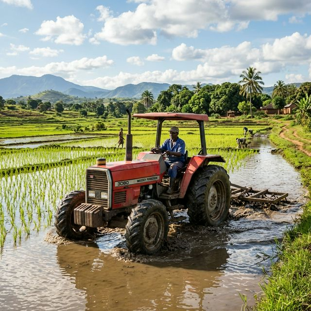

Production durable
Agriculture écoresponsable et pisciculture durable pour préserver le terroir du Bafing.
SCOOPS agricole et piscicole - Touba, Région du Bafing
Agriculture écoresponsable et pisciculture durable pour préserver le terroir du Bafing.
30% de femmes dans la gouvernance et priorité aux jeunes producteurs du terroir.
Unités de transformation du manioc et du riz pour créer de la valeur sur le territoire.
Adhérez à la coopérative et bénéficiez de l'accompagnement technique, de l'accès aux financements et de la mutualisation des équipements.
Rejoindre la coopérative